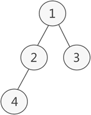

题目描述
假设二叉树采用二叉链表存储结构，编写算法计算二叉树中既有左孩子又有右孩子的节点数
分析
这种题目通过遍历整个二叉树的全部结点，并对所经过的每一个结点进行如下操作：
- 判断该结点的左孩子和右孩子是否同时存在，若存在，则说明该结点符合题目要求的条件，计数加
1，否则不计数
算法实现（这里给出两种形式的代码）
代码1
1 | int k=0;//计数器初始化为0 |
特别要注意的是：
计数变量k必须作为全局变量，否则在每一次进入下一层递归时，k又被初始化为0，从而出错
完整代码实例
首先创建一棵二叉树，形态如下：
算法实现
1 |
|
- 输出结果
1
满足条件的结点数为：1
代码2
1 | int v2_twochild(BiTree Tree){ |
完整代码实例
- 树的形态同上
1 |
|
- 输出结果
1 | 满足条件的结点数为：1 |
总结
以上两种形式的代码在考题中经常出现，要特别注意第一种写法中的k必须作为全局变量
推广
- 求解终端结点数，特定度数的结点数等也可以采用以上代码，稍加修改即可
- 这里给出目前我遇到的类似的题目以及对应的代码实现,以后遇到类似的继续补充
第一题
求二叉树中的非终端结点数
代码1
1 | int k=0; |
完整代码
1 |
|
运行结果
1 | 满足条件的结点数为：2 |
代码2
1 | int v2_findunleafnode(BiTree Tree){ |
完整代码
1 |
|
运行结果
1 | 满足条件的结点数为：2 |
第二题
求二叉树中所有结点数
代码1
1 | int n=0; |
完整代码
1 |
|
运行结果
1 | 满足条件的结点数为：4 |
代码2
1 | int count(BiTree Tree){ |
完整代码
1 |
|
运行结果
1 | 满足条件的结点数为：4 |
第三题
求解二叉链表存储结构下的叶子结点数目
代码11
2
3
4
5
6
7
8
9
10int n=0;
int count(BiTree Tree){
if(Tree!=NULL){
//n++;
if(Tree->lchild==NULL&&Tree->rchild==NULL) n++;
count(Tree->lchild);
count(Tree->rchild);
}
return n;
}
代码2
1 | int count(BiTree Tree){ |
第四题
在孩子兄弟链表示的树中求叶子结点数
- 分析：
第三题求的是在二叉链表结构存储下的叶子结点数目，这里给的是孩子兄弟存储结构(实质上也是一种二叉链表）
思想：
若为空树，返回0；
若长子域（Tree->firstchild）为空，则无孩子，即该结点为叶子结点，计数+1，并接着遍历其兄弟域(Tree->nextsibling)
以上都不满足，则是第三种情况，即：该结点既有孩子又有兄弟,那就把孩子和兄弟子树都遍历下在前面的代码基础上，修改树的结构为孩子兄弟结构
1
2
3
4typedef struct CSNode{
TElemType data;//数据域
struct CSTNode *firstchild,*nextsibling;//长子兄弟指针
}CSTNode,*CSTree;
当然，之前创建的树在这里已经不适用，需要重新创建符合要求的孩子兄弟存储结构的一棵树
代码11
2
3
4
5
6
7
8
9
10
11
12
13
14
15
16int k=0;
int tree_leafconut(CSTree Tree){
if(Tree==NULL) return 0;
else{
if(Tree->firstchild==NULL){
k++;//无孩子
tree_leafcount(Tree->nextsibling);//那就遍历兄弟
}//if
else{//有孩子也有兄弟，都需要遍历
tree->leafcount(Tree->firstchild);
tree->leafcount(Tree->nextsibling);
}//else
}//else
return k;
}
代码2
1 | int tree_leafcount(CS Tree){ |
more，等遇到再补充